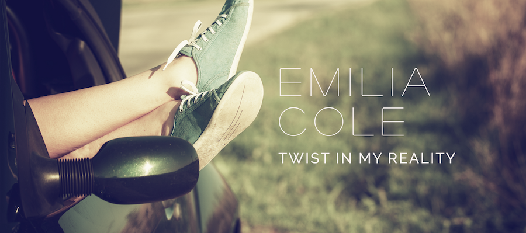

MUSIC //
Direct link
Album
Video: Organic Love
Video: Street Light
ALBUM TWIST IN MY REALITY

-
-
-
-
Go to top
VIDEO ORGANIC LOVE
1er Video: https://vimeo.com/135166028
Directed by VINCE MALC & EMILIA COLE
Edited and Filmed by NICOLAS TROY
Produced by NIKI HEART,
Wix Films LTD.
VIDEO STREET LIGHT
2do Video: https://vimeo.com/134861419
Directed by VINCE MALC & EMILIA COLE
Edited and Filmed by NICOLAS TROY
Produced by NIKI HEART,
Wix Films LTD.